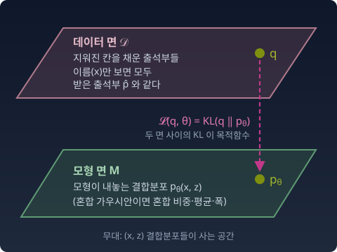
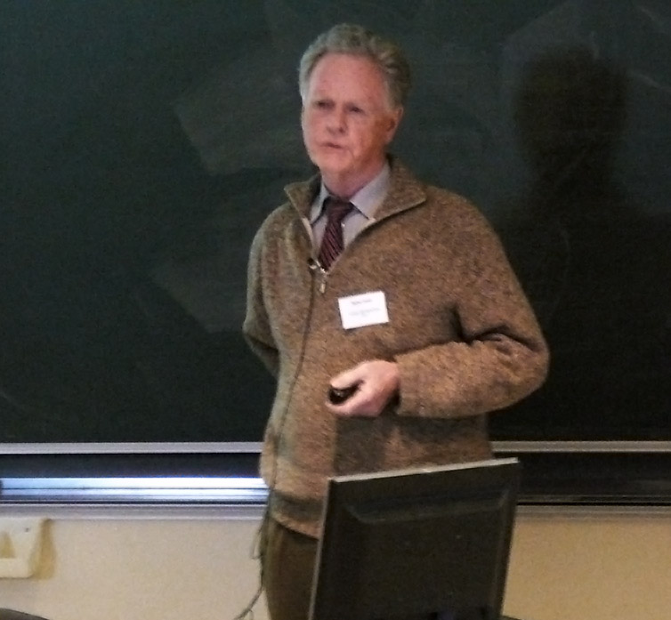

빈칸이 있는 데이터로 모형을 맞추는 EM은 흔히 "로그우도를 올린다"고 소개된다(우도는 모형이 관측에 준 확률이다). 정보기하학은 같은 일을 두고 "KL을 줄인다"고 말한다. 둘은 같은 이야기인가, 다른 이야기인가?
같은 이야기다. 다만 무대를 한 칸 넓혀야 보인다. 먼저 EM이 실제로 무엇을 하는지 손으로 한 바퀴 돌려 보자.
반쯤 지워진 출석부 — 채우고 다시 계산하기
조교가 받은 출석부에는 학생 이름(x)만 있고, 분반 번호(z)가 지워져 있다. 분반별 평균 점수를 내야 한다. 조교는 두 일을 번갈아 한다. 지금 알고 있는 분반별 특징으로, 각 학생이 어느 분반일지 확률을 적어 넣는다. 그 확률로 채운 "완성된 출석부"로 분반별 특징을 다시 계산한다.
지워진 칸을 채운 출석부는 여러 가지가 가능하다. 단 하나의 조건은, 분반 칸을 무시하고 이름만 보면 원래 받은 출석부와 같아야 한다는 것이다.
손으로 한 바퀴: 점수 넷, 분반 둘
학생 넷의 점수가 55, 60, 80, 90점이고, 분반은 둘이다. 숫자를 작게 두려고 두 분반의 인원은 반반, 분반 안의 점수 퍼짐(표준편차)은 둘 다 10점이라고 해 두고, 분반 평균만 모른다고 하자. 처음 어림은 1반 50점, 2반 70점이다.
첫째 일. 지금의 어림으로 학생마다 "1반일 확률"을 적는다. 평균 50, 표준편차 10인 종 모양 곡선과 평균 70인 곡선 가운데 그 점수에서 어느 쪽이 얼마나 높은지를 견주면 된다(베이즈 정리).
점수
55
60
80
90
1반일 확률
0.731
0.500
0.018
0.002
2반일 확률
0.269
0.500
0.982
0.998
60점은 두 어림의 한가운데라 반반이다. 이 확률들을 그 점이 그 분반에서 왔을 책임도(responsibility)라고 부른다.
둘째 일. 채운 출석부로 분반 평균을 다시 낸다. 학생 하나가 두 분반에 확률만큼 나뉘어 들어간다고 보고 가중 평균을 낸다. 1반은 (0.731·55 + 0.5·60 + 0.018·80 + 0.002·90) / (0.731 + 0.5 + 0.018 + 0.002) ≈ 57.4점, 2반은 같은 식으로 약 77.5점이다(반올림하지 않은 확률로 계산하면 57.43점과 77.54점).
이 두 일을 네 바퀴 돌리면 두 평균은 (50, 70) → (57.43, 77.54) → (58.46, 82.02) → (58.61, 83.78) → (58.68, 84.26)으로 옮겨 가고, 평균 로그우도(점수 하나당 log 우도의 평균)는 −4.439 → −4.040 → −3.963 → −3.953으로 올라가기만 한다. 첫째 일이 E-스텝(Expectation: 지워진 칸의 기댓값 채우기), 둘째 일이 M-스텝(Maximization: 채운 출석부로 가장 그럴듯한 모수 고르기)이고, 둘을 번갈아 하는 것이 EM이다.
무대: 두 개의 면
관측은 x뿐이고, 잠재변수 z는 보이지 않는다. 출석부에서는 분반 번호, 혼합 가우시안(종 모양 곡선 여러 개를 섞은 모형)이라면 "이 점이 몇 번째 봉우리에서 왔는가"다.
무대는 (x, z)의 결합분포들이 사는 공간이다. 여기에 면이 두 개 있다.
데이터 면 D — x-주변분포(조건을 모두 합쳐 버린, 곧 z를 모두 더해 없앤 x만의 분포)가 경험분포 p̂(x)와 같은 결합분포 q(x, z)들. 지워진 칸을 채운 출석부들이다. q(x, z) = p̂(x)·q(z|x) 꼴이고, q(z|x)는 마음대로 고를 수 있다.
모형 면 M — 모형 pθ(x, z)들. 혼합 가우시안이면 pθ(x, z=k) = wk·N(x; μk, σk²)이다(wk는 혼합 비중, μk와 σk는 봉우리의 평균과 표준편차).

위의 데이터 면 D(지워진 칸을 채운 출석부들, 이름만 보면 모두 받은 출석부와 같다)와 아래의 모형 면 M(모형이 내놓는 결합분포 p_θ(x, z)). 면 위의 점 q 와 p_θ 사이의 KL 이 EM 의 목적함수 𝓛(q, θ)
D는 m-평탄하다. D의 두 원소를 섞어도 x-주변분포는 여전히 p̂(x)이므로, 혼합에 대해 닫혀 있다. M은 완전데이터(z까지 다 보인다고 친 데이터)의 모형이 지수족이면 e-평탄하다. 혼합 가우시안의 완전데이터 모형은 지수족이다.
q에 대해 먼저 최소화해 보자. 결합분포를 x와 z|x로 쪼개면 KL이 두 조각이 된다. x 부분은 KL(p̂(x)‖pθ(x))이고 q와 무관하다. z|x 부분은 KL(q(z|x)‖pθ(z|x))의 평균이고, q(z|x) = pθ(z|x)일 때 0이 된다. 그러니 q를 최선으로 고른 뒤 남는 값은 KL(p̂(x)‖pθ(x))다.
그리고 경험분포에서 잰 이 KL은 "−평균 로그우도 + 상수"다. 상수는 p̂의 엔트로피(평균적 놀라움)이고 θ와 무관하다.
ELBO는 로그우도의 하한이고, 갭은 추측 q(z|x)와 진짜 사후분포 사이의 KL이다. 갭이 0이 되는 것은 q(z|x)가 사후분포와 같을 때뿐이다.
수확
“EM의 목적함수는 데이터 면과 모형 면 사이의 KL이다. q를 최선으로 두면 그것은 −로그우도 + 상수다. KL을 줄이는 이야기와 로그우도를 올리는 이야기는 같은 이야기다.”
인물 이야기 — Dempster, Laird, Rubin과 “불완전 데이터의 문제”

Arthur Dempster
1976년 12월 8일, 영국 왕립통계학회 모임에서 논문 한 편이 읽혔다. 하버드 대학과 교육평가원(ETS)의 아서 뎀프스터(Arthur P. Dempster), 낸 레어드(Nan Laird), 도널드 루빈(Donald Rubin)이 쓴 「Maximum Likelihood from Incomplete Data via the EM Algorithm」. 이듬해 1977년에 Journal of the Royal Statistical Society (Series B)에 실린 이 논문이 이름을 붙인 것 — EM 알고리즘.
논문은 스스로 이 알고리즘이 처음이 아니라고 적었다. “EM 알고리즘은 특수한 경우들에서 여러 번 제안되었다.” 유전학에서는 일찍부터 같은 일이 있었다. 겉으로 보이는 형질과 그 밑의 유전자 조합이 하나씩 맞지 않을 때(혈액형이 A형인 사람은 유전자 조합이 AA인지 AO인지 겉으로 보이지 않는다) 유전자 빈도를 추정하려고, 체펠리니·시니스칼코·스미스(1955)는 빈칸을 지금의 빈도로 나눠 채우고 다시 세는 셈법을 썼다. 하틀리(1958)는 비슷한 다항분포 예를 셋 냈고, 은닉 마르코프 모형의 바움 등(1970)도 같은 구조를 썼다. 사람들은 이 방법을 사례마다 따로 알고 있었다.
논문의 첫 예도 유전학이다. 동물 197마리가 네 칸에 125, 18, 20, 34마리로 나뉜 자료(라오의 교과서에 실린 것)에서, 첫 칸 125마리를 보이지 않는 두 칸으로 쪼개 생각한다. 지금의 모수로 125마리를 두 칸에 나눠 넣고(E), 나눈 자료로 모수를 다시 맞추는(M) 일을 0.5에서 시작해 되풀이하자, 여덟 걸음 만에 0.6268에 다가갔다(이 책에서 다시 계산한 값). 논문은 이 예를 표로 보이고, 걸음마다 남은 오차가 거의 같은 비율로 줄어드는 것까지 적었다.
이 논문이 한 일은 흩어진 사례들에 이름과 구조를 준 것이다. 사례들을 하나의 알고리즘으로 묶고, 매 스텝 우도가 줄지 않는다는 것을 보였고, 수렴 속도가 빠진 정보의 비율로 정해진다는 것도 밝혔다.
그런데 수렴 증명에는 구멍이 있었다. 1983년, 제프 우(C. F. Jeff Wu)가 Annals of Statistics에서 그 결함을 짚고 증명을 다시 썼다. 그는 두 물음을 갈랐다. EM이 도착하는 곳은 국소 최댓값인가, 기울기가 0인 점(정류점)일 뿐인가? 그리고 모수의 수열 자체가 한 점으로 모이는가? 우도의 값이 줄지 않는다는 것과 이 두 물음은 서로 다른 이야기였다. 이 장 뒤쪽의 「수렴하는 것과 수렴하지 않는 것」은 그 구분을 따른 것이다.
기하학적 그림은 따로 자랐다. 치사르(Csiszár)와 투슈나디(Tusnády)는 1984년에 EM을 두 집합 사이 KL의 교대 최소화로 썼고, 아마리(Amari)는 1995년에 그것을 e-사영과 m-사영의 교대(em 알고리즘)로 그리며 두 알고리즘이 대부분의 경우에 같다는 것을 보였다. 두 사영의 피타고라스는 매 스텝의 감소량을 정확히 재 준다. 수렴을 “만드는” 것은 교대 최소화이고, 기하학은 그 과정을 “보이게” 만든다.
문제 3. ELBO의 갭은 KL이다
한 점 x에 대해 다음을 증명하라.
log pθ(x) − ELBO(q, θ) = KL(q(z|x)‖pθ(z|x)).
그리고 w = (0.5, 0.5), μ = (0, 3), σ = (1, 1), x = 1에서 q = (0.5, 0.5)일 때와 q = 사후분포일 때의 갭을 계산하라.